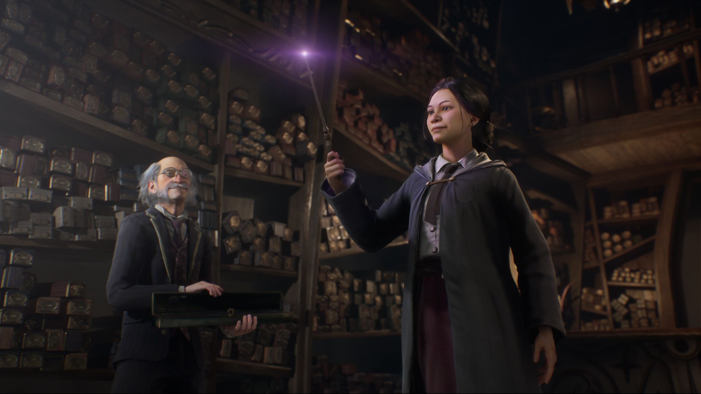

Про гру Hogwarts Legacy

Hogwarts Legacy — відеогра в жанрі рольового бойовика, яка розробляється Avalanche Software і буде видана Warner Bros. Interactive Entertainment під лейблом Portkey Games для Microsoft Windows, PlayStation 5 та Xbox Series X/S у лютому 2023 року. Версії для PlayStation 4 та Xbox One будуть випущені 4 квітня, а порт для Nintendo Switch — 25 липня. Сюжетна історія, що розгортається наприкінці XIX століття в Чарівному світі, оповідає про пригоди вихованця Гоґвортсу. Ігровий процес має управління від третьої особи, через яке гравець контролює протагоніста, якого створює на початку проходження.
Ігровий процес
Hogwarts Legacy є відеогрою від третьої особи в жанрі рольового бойовика. Гравець контролює вихованця Гоґвортської школи чарів і чаклунства та має можливість налаштувати голос, зовнішність і стать персонажа, а також вибрати гуртожиток на початку гри; загалом можливо створити до чотирьох різних персонажів. Під час проходження гравець виконує сюжетні та побічні квести, щоби просуватися історією, і може налаштувати складність ігрового процесу; опановує нові заклинання і здібності; варить зілля, які використовує в бойових зіткненнях або для вирішення головоломок; і приборкує магічних істот. Досліджуючи відкрите навколишнє середовище гравець знаходить спорядження для свого персонажа, яке вдосконалюється за внутрішньоігрову валюту — місячні камені. Гравець може викликати мітлу або приборканих істот, щоби швидше подорожувати світом; у міру проходження характеристики мітли можна покращувати.
У грі присутня Кімната на вимогу (англ. Room of Requirement), інтер'єр якої можна прикрасити різноманітними предметами. Через портал у Кімнаті гравець потрапляє до ділянки зі своїми істотами, де він може годувати й пестити їх, за що здобуває матеріали для створення спорядження. Гравцю також доступні кілька бойових арен, де він змагається з неігровими персонажами та може протестувати здібності перед їх розблокуванням. За виконання бойових досягнень гравець нагороджується косметичними предметами, включно з костюмами для персонажа. Гравець спілкується з неігровими персонажами через дерево діалогу та може залучати їх як компаньйонів для проходження квестів.
Розробка
Hogwarts Legacy розробляється Avalanche Software, яка є дочірньою студією Warner Bros. Interactive Entertainment. Джоан Роулінг, авторка серії романів про Гаррі Поттера, не брала безпосередньої участі в розробці проєкту. До команди розробників входять ігровий та художній директори Алан Тью і Джефф Банкер відповідно, а також Мойра Скваєр, яка відповідає за наратив. У лютому 2021 року серія повідомлень у соціальних мережах, опублікованих старшим продюсером та колишнім провідним дизайнером Hogwarts Legacy Троєм Левіттом, зазнала широкої критики. Інтернет-видання повідомляли про зміст його відео на YouTube, таких як «На захист Джона Лассетера» та «В ім'я культурного привласнення», а також тих, де Левітт демонстрував підтримку скандальній кампанії цькування «Геймергейт». Після цього Левітт залишив Avalanche і сам проєкт, хоча заявив, що суперечки, пов'язані з його діяльністю в соціальних мережах, не мали стосунку до цього. Водночас Warner Bros. відмовилася від коментарів.
Дата виходу
Гра буде випущена 10 лютого 2023 року для Microsoft Windows, PlayStation 5 та Xbox Series X/S; до цього її випуск було відкладено з 2021 на 2022 рік. Версії для PlayStation 4 та Xbox One будуть випущені 4 квітня, а порт для Nintendo Switch — 25 липня. Hogwarts Legacy отримає стандартне видання, яке окрім базової гри надає доступ до рецепта зілля та ексклюзивного квесту у версії для PlayStation; видання Deluxe, що містить декілька внутрішньоігрових предметів і доступ до бойової арени темних мистецтв; і фізичне колекційне видання, яке містить весь контент Deluxe на додаток до деяких інших предметів. Передзамовлення будь-якого видання відкриває оніксового гіпогрифа, а передзамовлення видання Deluxe для Windows, PlayStation 5 чи Xbox Series X/S надає ранній доступ до гри за три дні перед офіційним випуском.